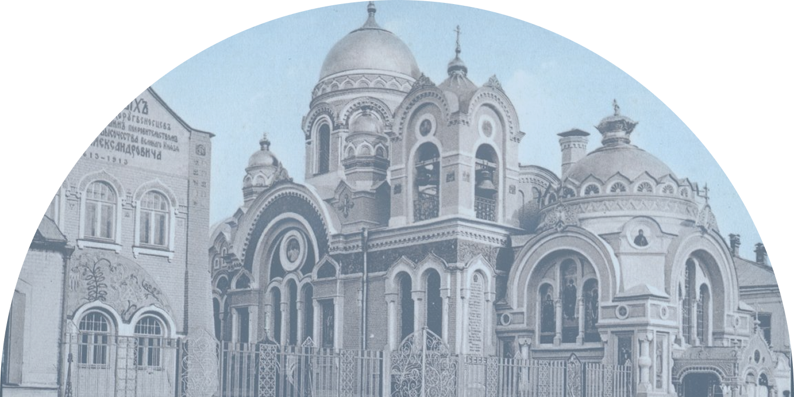

достопримечательности
Интересные места


Выберите точку
Наша интерактивная карта предлагает вам лучший способ познакомиться с Ельцом. Вы увидите 10 ключевых локаций города, таких как Вознесенский собор и дом-музей Бунина. Нажав на любую метку на карте, вы откроете краткое описание места. Вы можете построить удобный пеший маршрут, чтобы посетить выбранные точки в оптимальной последовательности. Карта обновляется с новыми событиями и местами, помогая вам не пропустить самое важное в поездке.
Архитектура
Древний, как сама Русь
Архитектурный облик Ельца — это редкий пример сохранившегося цельного ансамбля уездного города. Его исторический центр, расположенный на высоком берегу реки Быстрой Сосны, практически не нарушен современными постройками, что позволяет ощутить подлинный дух старины. Гуляя по улицам, можно встретить строгие каменные особняки в стиле классицизма, живописные деревянные дома с богатой резьбой и выразительные сооружения «кирпичного стиля»
подробнее
храмы
Город 33 церквей
Легенда гласит, что некогда богатые елецкие купцы обратились к царю с просьбой присвоить Ельцу статус губернского города. Правитель не отказал, но поставил условие: построить в городе ровно 33 церкви, и с каждой точки Ельца должен быть виден хотя бы один купол с крестом. Купцы приняли вызов и развернули масштабное строительство, возводя храмы с размахом, достойным будущей губернской столицы.
Однако история распорядилась иначе. Когда в городе была возведена 31 постройка, грянула революция 1917 года, и строительство последних церквей так и не было завершено. Сегодня это красивое предание остаётся частью культурной истории, напоминая о его амбициях и неосуществлённых планах. По разным данным, до наших дней в Ельце сохранилось 13 храмов, включая два монастыря и несколько часовен.
Памятники
Скульптурный облик Ельца — это история в бронзе и камне. Он включает памятники воинской славы, известным уроженцам и защитникам Отечества, которые рассказывают о разных эпохах жизни города. Например, стела «Город воинской славы» и памятник Ивану Бунину напоминают о подвигах и творческом наследии ельчан.
подробнее